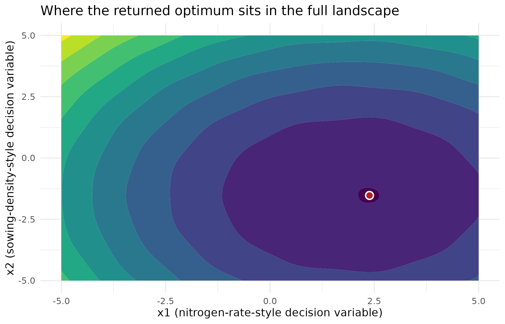

Why
An agronomist has written a cost function over two decision variables
– say a nitrogen rate and a sowing density – and wants the combination
that minimises it under a fixed number of trial runs. She does not know,
before she starts, whether that cost surface is a smooth bowl, has a
ripple hiding a second dip, or is something else entirely, and she does
not want to choose a different optimisation package for every shape she
might meet. optimix is built for exactly that: one call
that takes a function and a box, and returns the best point it can find
within the budget, whatever the surface turns out to be. This vignette
walks the whole surface of the package – both front doors, the result it
hands back, and what the optimiser actually found – and closes by
showing that optimum sitting inside the landscape it was found in.
What
optimix() is the single verb: it takes an objective
function (or an optim_problem()) and a design space,
chooses or uses a named optimiser, and returns an
optimix_result. optim_problem() is the typed
contract behind it – fn, space (typically a
space_box()), an optional evaluation budget, warm start and
seed – and is what the easy path builds internally from fn,
lower and upper.
list_optimisers() reports the registry of engines optimix
knows about, which of their backend packages are installed, and the
traits (global, noise_tolerant,
emits_map) the selector reads. The result behaves like a
stats::optim() return value, with coef(),
as.data.frame() and as_optim() as read-outs
for code that expects exactly that shape.
Do
The easy path
The easy path takes a function and box bounds, in the spirit of
stats::optim(). The objective below is a synthetic
quadratic bowl centred on the origin, and
method = "base_optim" names the zero-dependency core engine
directly, so this chunk needs nothing beyond base R:
result <- optimix(
function(x) sum(x^2),
lower = c(-5, -5),
upper = c(5, 5),
method = "base_optim"
)
result
#> <optimix_result>
#> optimiser : base_optim
#> value : 0
#> par : 0, 0
#> evals : 5
#> converged : yesminimise() and maximise() are readable
aliases for the same call.
Which optimisers are available
With the default method = "auto", optimix selects an
optimiser for the problem from those whose package is installed, and
records the choice in the result’s provenance.
list_optimisers() shows what is available on this
build:
lo <- list_optimisers()
lo
#> name package installed global noise_tolerant emits_map
#> 1 base_optim base TRUE FALSE FALSE FALSE
#> 2 bayesopt DiceKriging TRUE TRUE FALSE FALSE
#> 3 cmaes cmaes TRUE TRUE FALSE FALSE
#> 4 deoptim DEoptim TRUE TRUE TRUE FALSE
#> 5 deoptimr DEoptimR TRUE TRUE TRUE FALSE
#> 6 dfoptim_hjkb dfoptim TRUE FALSE FALSE FALSE
#> 7 gensa GenSA TRUE TRUE TRUE FALSE
#> 8 nloptr_bobyqa nloptr TRUE FALSE FALSE FALSE
#> 9 nloptr_directl nloptr TRUE TRUE FALSE FALSE
#> 10 perm_sa base TRUE TRUE FALSE FALSE
#> 11 proxymix_map proxymix TRUE TRUE FALSE TRUE| name | package | installed | global | noise_tolerant | emits_map |
|---|---|---|---|---|---|
| base_optim | base | TRUE | FALSE | FALSE | FALSE |
| bayesopt | DiceKriging | TRUE | TRUE | FALSE | FALSE |
| cmaes | cmaes | TRUE | TRUE | FALSE | FALSE |
| deoptim | DEoptim | TRUE | TRUE | TRUE | FALSE |
| deoptimr | DEoptimR | TRUE | TRUE | TRUE | FALSE |
| dfoptim_hjkb | dfoptim | TRUE | FALSE | FALSE | FALSE |
| gensa | GenSA | TRUE | TRUE | TRUE | FALSE |
| nloptr_bobyqa | nloptr | TRUE | FALSE | FALSE | FALSE |
| nloptr_directl | nloptr | TRUE | TRUE | FALSE | FALSE |
| perm_sa | base | TRUE | TRUE | FALSE | FALSE |
| proxymix_map | proxymix | TRUE | TRUE | FALSE | TRUE |
An optim()-compatible result
The result is shaped like a stats::optim() return value
– par, value, counts,
convergence, message – so existing code keeps
working, with optimix extras alongside. The usual accessors apply:
coef(result)
#> [1] 0 0
as.data.frame(result)
#> x1 x2 value optimiser
#> 1 0 0 0 base_optim
as_optim(result)
#> $par
#> [1] 0 0
#>
#> $value
#> [1] 0
#>
#> $counts
#> function gradient
#> 5 NA
#>
#> $convergence
#> [1] 0
#>
#> $message
#> [1] "CONVERGENCE: NORM OF PROJECTED GRADIENT <= PGTOL"The power path
For noise, an evaluation budget, a warm start, or a seed, build an
optim_problem() directly and pass it to
optimix(). The objective below is a synthetic bowl shifted
to (1, 1), capped at 2000 evaluations:
problem <- optim_problem(
fn = function(x) sum((x - 1)^2),
space = space_box(lower = c(-5, -5), upper = c(5, 5)),
max_evals = 2000
)
power_result <- optimix(problem, method = "base_optim")
power_result
#> <optimix_result>
#> optimiser : base_optim
#> value : 0
#> par : 1, 1
#> evals : 20
#> converged : yesThe same problem object is what the easy path builds behind the scenes – one contract, two front doors.
A figure: where the optimum sits in the landscape
None of the results above shows what the objective actually looks
like around the point that was returned. The synthetic surface below is
a bowl centred near (2, -1.5) with a small sinusoidal
ripple layered on top, so it is not quite the clean quadratic of the two
examples above; method = "auto" is left to choose the
engine, exactly as a first-time user would call it:
set.seed(9)
rippled_bowl <- function(x) {
sum((x - c(2, -1.5))^2) + 0.4 * sin(3 * x[1]) * cos(2 * x[2])
}
auto_result <- optimix(
rippled_bowl, lower = c(-5, -5), upper = c(5, 5), method = "auto"
)
auto_result
#> <optimix_result>
#> optimiser : nloptr_bobyqa
#> value : -0.156071
#> par : 2.3848, -1.5269
#> evals : 313
#> converged : yes
auto_result$provenance$engine
#> [1] "nloptr_bobyqa"
gx <- seq(-5, 5, length.out = 100L)
gy <- seq(-5, 5, length.out = 100L)
grid_df <- expand.grid(x1 = gx, x2 = gy)
grid_df$z <- apply(
grid_df, 1L, function(row) rippled_bowl(c(row[["x1"]], row[["x2"]]))
)
opt_df <- data.frame(x1 = auto_result$par[1L], x2 = auto_result$par[2L])
ggplot2::ggplot(grid_df, ggplot2::aes(x1, x2, z = z)) +
ggplot2::geom_contour_filled(bins = 12L) +
ggplot2::scale_fill_viridis_d(name = "cost", guide = "none") +
ggplot2::geom_point(
data = opt_df, ggplot2::aes(x1, x2), inherit.aes = FALSE,
colour = "white", fill = "firebrick", shape = 21L, size = 3L, stroke = 1L
) +
ggplot2::labs(
x = "x1 (nitrogen-rate-style decision variable)",
y = "x2 (sowing-density-style decision variable)",
title = "Where the returned optimum sits in the full landscape"
) +
ggplot2::theme_minimal()
The rippled synthetic bowl over its full search box, with the optimum optimix found marked in red. The ripple bends the contours away from a perfect ellipse without moving the deepest point far from the unperturbed bowl’s centre.
Read
The easy-path bowl is solved exactly: optimix() returns
a value of 0 at par = (0, 0), using 5 evaluations of the zero-dependency
base_optim engine. The registry carries 11 named
optimisers, of which 11 are installed and available on this build –
every engine behind a Suggests package plus the base engine
and the permutation annealer, since every optional package checked in
the DESCRIPTION happens to be present here. The accessors read the same
result three ways: coef() returns the bare parameter
vector, as.data.frame() adds the objective value and the
engine name as columns, and as_optim() strips the result
back down to the five components a stats::optim()-based
caller expects. The power-path bowl, shifted to (1, 1), is
also solved exactly, in 20 evaluations against its 2000-call budget –
the budget is a ceiling the engine did not need to spend.
The rippled bowl is where a single number stops being enough.
method = "auto" chose nloptr_bobyqa for it, reaching a
value of -0.1561 at par = (2.385, -1.527). Read on its own, that pair of
numbers says nothing about how close the ripple came to hiding a second,
competing dip nearby, or how far the optimum sits from the edges of the
search box. The figure answers both at a glance: the returned point sits
inside the deepest contour band, close to the unperturbed bowl’s centre
at (2, -1.5), and the ripple bends the bands without
creating a second dark region the optimum could have missed.
Limits
This vignette runs one call per example and reads its result in
isolation; it does not compare engines against each other, examine why
method = "auto" chose one engine over another, or
characterise a budget’s effect on solution quality – The auto
selector and racing does both. It also stays in two dimensions, in
a continuous box, with a single global optimum in each example:
optimix_map() for a surface with several equally good
optima, and space_permutation() for search over orderings
rather than real-valued points, are both left to their own vignettes.
Nothing here demonstrates that a chosen engine failed to converge, or
shows the classed abstention a caller can check for when it did; that
machinery is exercised directly in Mapping optima and the orchestra
manifest.
What to read next
The auto selector and racing explains the rules and the race
behind method = "auto", states the held-out evidence for
when it wins, and introduces the provenance fields this vignette only
prints in passing. Mapping optima and the orchestra manifest
answers “what if there is more than one good answer”, and shows the
typed abstention a caller receives when a request cannot be honoured.
Combinatorial optimisation and delta evaluation moves from
real-valued boxes to orderings, for scheduling- and assignment-shaped
problems.
Reproduce
Seed 9 for the rippled-bowl figure; the two
quadratic-bowl examples are deterministic and draw no random
numbers.
sessionInfo()
#> R version 4.6.1 (2026-06-24)
#> Platform: x86_64-pc-linux-gnu
#> Running under: Ubuntu 24.04.5 LTS
#>
#> Matrix products: default
#> BLAS: /usr/lib/x86_64-linux-gnu/openblas-pthread/libblas.so.3
#> LAPACK: /usr/lib/x86_64-linux-gnu/openblas-pthread/libopenblasp-r0.3.26.so; LAPACK version 3.12.0
#>
#> locale:
#> [1] LC_CTYPE=C.UTF-8 LC_NUMERIC=C LC_TIME=C.UTF-8
#> [4] LC_COLLATE=C.UTF-8 LC_MONETARY=C.UTF-8 LC_MESSAGES=C.UTF-8
#> [7] LC_PAPER=C.UTF-8 LC_NAME=C LC_ADDRESS=C
#> [10] LC_TELEPHONE=C LC_MEASUREMENT=C.UTF-8 LC_IDENTIFICATION=C
#>
#> time zone: UTC
#> tzcode source: system (glibc)
#>
#> attached base packages:
#> [1] stats graphics grDevices utils datasets methods base
#>
#> other attached packages:
#> [1] optimix_0.2.0.9000
#>
#> loaded via a namespace (and not attached):
#> [1] gtable_0.3.6 jsonlite_2.0.0 compiler_4.6.1 cmaes_1.0-12
#> [5] parallel_4.6.1 dfoptim_2023.1.0 jquerylib_0.1.4 systemfonts_1.3.2
#> [9] scales_1.4.0 textshaping_1.0.5 yaml_2.3.12 fastmap_1.2.0
#> [13] ggplot2_4.0.3 R6_2.6.1 labeling_0.4.3 isoband_0.3.0
#> [17] proxymix_0.17.0 DEoptim_2.2-8 knitr_1.52 nloptr_2.2.1
#> [21] desc_1.4.3 bslib_0.12.0 RColorBrewer_1.1-3 rlang_1.3.0
#> [25] cachem_1.1.0 xfun_0.62 fs_2.1.0 DiceKriging_1.6.1
#> [29] sass_0.4.10 S7_0.2.2 otel_0.2.0 viridisLite_0.4.3
#> [33] cli_3.6.6 withr_3.0.3 pkgdown_2.2.1 digest_0.6.39
#> [37] grid_4.6.1 lifecycle_1.0.5 DEoptimR_1.2-2 vctrs_0.7.3
#> [41] GenSA_1.1.15 evaluate_1.0.5 glue_1.8.1 farver_2.1.2
#> [45] ragg_1.5.2 rmarkdown_2.32 tools_4.6.1 htmltools_0.5.9